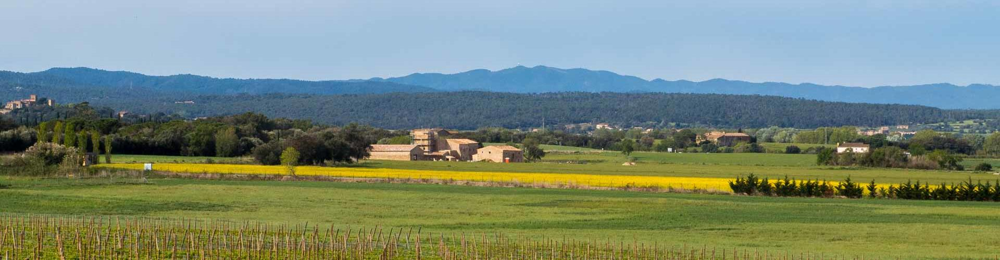

Ruta · Montgrí
Es tracta d’una ruta familiar, completament plana i ideal per fer en bicicleta. Passejarem entre camps de vinya i arrossars , resseguirem recs a tocar del Daró Vell entre camps de conreu, veurem…